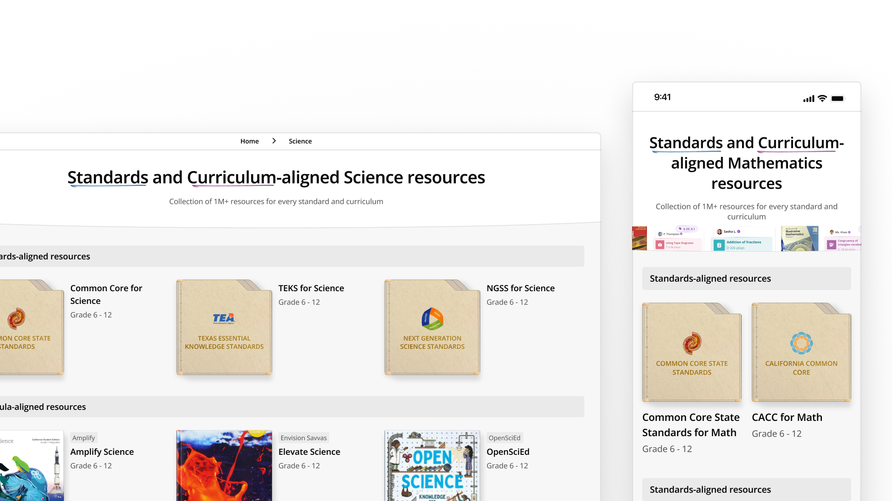
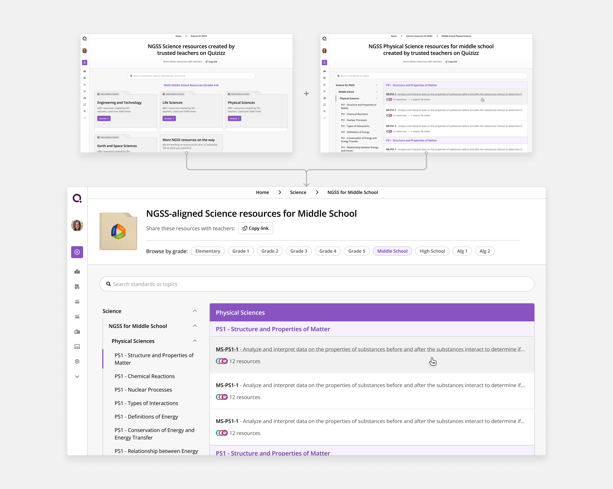
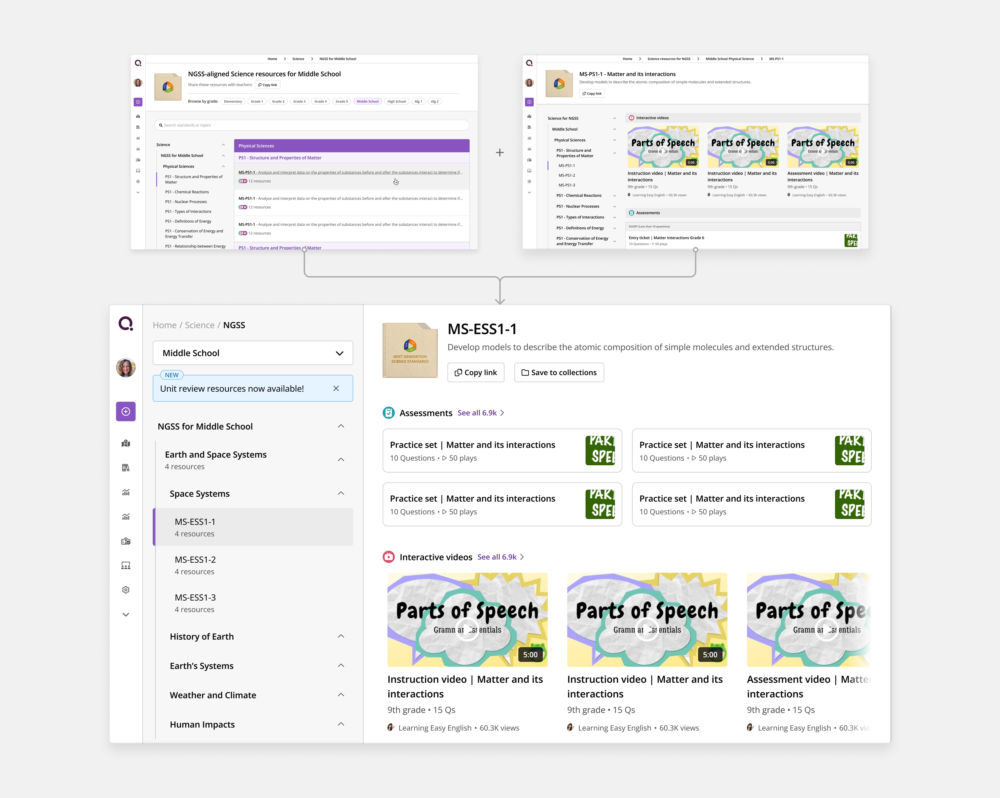
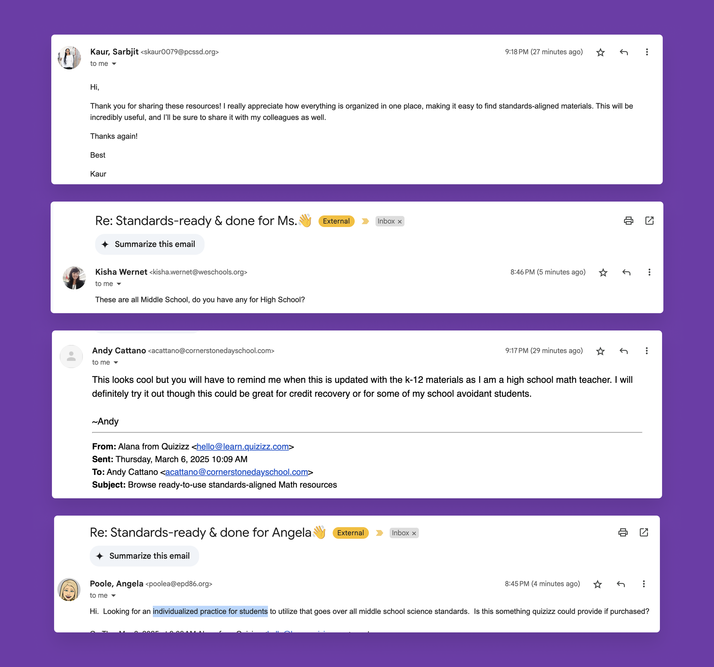
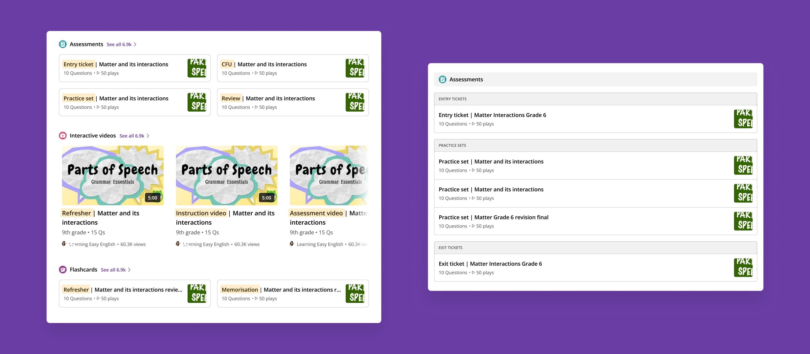
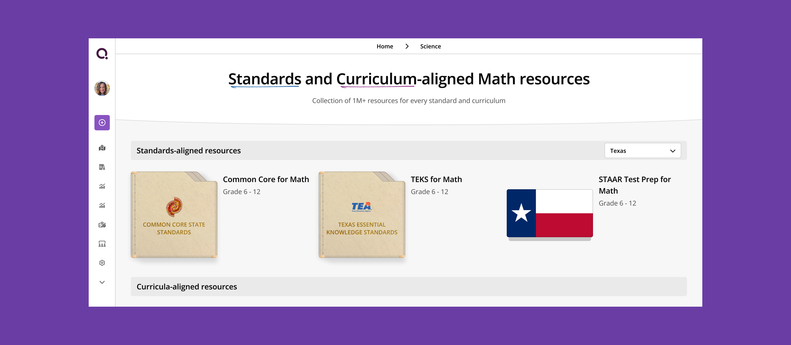

Driving Engagement and Trust with Standards and Curriculum Aligned Resources
Quizizz is mainly used for a review use case, which is a once-a-month use case. Although Quizizz hosts a vast public library with resources on every granularity, there is some gap when communicating this to the teachers. We paired up these resources with the widely used standards and curricula that teachers rely on and aced the high frequency use case.

Overview
The goal
Standards and curriculum alignment is something that teachers seek within resources. The goal here is to provide a catalog-like experience where teachers can find standards and curriculum aligned resources for every topic.
Results

80%
4pp increase
200%
Process
Prequel
A framework is a list of skills that a student should know in a particular grade. These skills are called standards. While browsing for teaching resources online, teachers often try to align the content with these standards.
Same is the case for different curricula. Teachers use curricula for supplemental instruction and assessment. Generally, it is difficult to find content aligned to these curricula.
In previous months, we learned that with the vast number of resources available online, teachers don't have a go-to platform to get content on standards or curricula. This was a big pain point for them, because schools demanded standards-aligned instruction.
Hence, we define the problem statement as:
There is no platform that provides high quality, standards and curriculum aligned resources for instruction. This is a pain point for teachers because all schools demand standards and curriculum alignment.
Our learnings here have been:
- Teachers want standards and curriculum aligned resources
- Standards and curriculum alignment is also a trust marker for a platform
- There is no go-to catalog place for this in the market
- Instruction is in a sequential process - the teacher will teach consecutive topics on consecutive days
The goal
The goal here is to create a collection of resources. These resources will be mapped to standards and curricula. And to have resources for every granularity.
What does success look like?
Completion rate:
After initial explorations, we understood that the end product might have a complicated navigation. Hence, kept a goal to track the percentage of users finally ending up at a desired resource.
Shares:
This is an experience that will be useful for all teachers. For a teacher who is exposed to this experience, they should find it useful, and share it with other teachers from their department or school.
Repeat usage:
As pointed out earlier, teachers will teach consecutive topics in a week. Hence, after completing an activity, they should com back to the experience for the next one.
Successful hosts:
This goes without saying. At Quizizz, meaningful hosts are the defining metric of the usefulness of our platform.
Improved search terms:
Our hypothesis was, with the education that Quizizz has resources on every granular topic, the search terms would become more granular and more refined, which ultimately contributes to higher search success rate.
Activation:
This was an unprecedented success. In our analysis, we found that new users exposed to this experience were activating at a much higher rate.
Perception of Quizizz:
This also aligns with our long-term goal of building the perception of Quizizz as a high-quality, trustworthy platform.
Competitive research
I used several platforms that try something similar.
Common Core Coherence Map
This is a catalog that teachers use to know the relation between different standards like prerequisites.

- Click-based interface.
- Teacher knows what they want and where it resides - easy to drill down.
- Only has the standards map, does not provide resources.
IXL
Widely used by teachers for Math practice.

- Standards and curriculum aligned practice set available topics.
- No customisation available - user couldn't alter the difficulty based on the use case.
- Uses book covers, state flags, and logos to drive recognition.
NGSS Website
Official website for the NGSS framework.

- Lists down all standards, can be filtered by grade, domain, topic, etc.
- Lists down prerequisite and proficiency required.
- Doesn't offer resources.
Some other platforms
I also looked at some other competitors trying to solve this problem.
- Peardeck and Nearpod
- Have unit review resources.
- Do not cover the entire base.
- Have no mapping to standards or curricula.
- TPT
- Provides bundles with practice sets. Multiple bundles present for every topic.
- Has standards mapping.
- Does not cover all topics.
- All bundles are paid.
Here are the all the key insights I gathered:
- Teachers know what they want. They only need a clear navigation method to reach the content they want.
- Quality works over quantity. A few high confidence resources are better than a hundred low confidence ones to choose from.
- Elements like state flags, framework logos and book covers are something that build quick recognition and boost trust.
Laying down the principles
Before jumping on to the designs, I saw it relevant to lay down some design principles:
- The design had to be easily navigable.
- The design had to sell trust and coverage.
- Most importantly, the design had to be scalable.
Keeping in mind these, let's move on to see how the design evolved.
Iterations
With all these insights in mind, let's see how the designs evolved over time.
Some early ideas
These were for an early concept when we had only curated resources for standards and not curricula.

With feedback from both user calls as well as within the company, we understood that:
- The navigation tree structure in the first iteration is going to be extremely helpful.
- A click-based approach will be easiest for the teachers to navigate, as well as show our breadth of coverage.
The further iterations are some later ones with curricula added as well. Let's look at the attempts with these learnings.
The process
Initial flow
We finally went ahead with the click-based approach.
The navigation decided was:
Subject -> Curriculum -> Grade + Domain -> Topic -> Resources


The initial feedback was very positive. Teachers loved having all content at one place.
Maybe too many steps?
After analysing the data, we found out that:
- The highest drop-off was at the grade+domain selector step.
- Teachers went back and forth to different domains to explore the coverage.
Hence, we combined some steps into one:

Content tree is the essence
In our user calls and while seeing user recordings, we noted that teachers extensively use the sidebar for navigating the content. This is because they know what topic they want to drill down to.
While the table of content on the right is very comprehensive and a very good use case for first-time browsing and grasping the breadth of content, the tree served as the main navigation when teachers actually wanted to find content.
Hence, we decided to skip a step again, and combine the last 2 steps into a single one:

Also, somewhere in between, we also added resources at not only the most granular level, but also at the unit level, which will be used for unit reviews.
These were some insights which helped us improve the overall experience. With some additional changes such as an intermediate grade selector modal and unit review resources, here is the final solution.
Final solution
Here is how a teacher navigates through the resource library:
Extras
Results
The results were very fruitful from the start and appreciated by all:
- ~80% completion rate, one of the highest we had ever seen in the product.
- An unexpected 4pp boost (25% increase) in activation rate.
- ~13% CTR in home page touchpoint for new users, with ~20% activating in first session.

- For every one teacher exposed to the experience (via mails, touchpoint, etc.), 2 new were coming via a shared link.
- 40% daily repeat users.
Repeat usage for sequential assessment
We also saw a lot of users hosting sequential topics in consecutive days. These were users who were earlier LF users, which transitioned to HF users.

Teachers shifting from search to browse
Interestingly, a small cohort of teachers completely moved away from the public library experience and started hosting exclusively from the browse experience, giving us further confidence that this might be how teachers use our platform in the future.
Some teacher love (and demands)
Just after the rollout, we saw tons of mails from teachers asking for more resources, more curricula, more grades, and more use cases. We are slowly tackling coverage, our first priority being improving the quality of resources.


Classifying resources according to JTBDs
I thought of classifying the types of resources available into teacher JTBDs. This would further help them in selecting which resources to host in different parts of their journey.

Unfortunately, this could not be executed due to our low confidence in tagging these resources to such JTBDs.
State test prep resources
In the month of April, teachers are assessing students on content taught throughout the year. These tests are also aligned to state standards and are hence called state tests. I had the idea of adding such year-review resources in our experience.

All in all, this was a huge success, and we are still working to increase coverage and uplift quality.